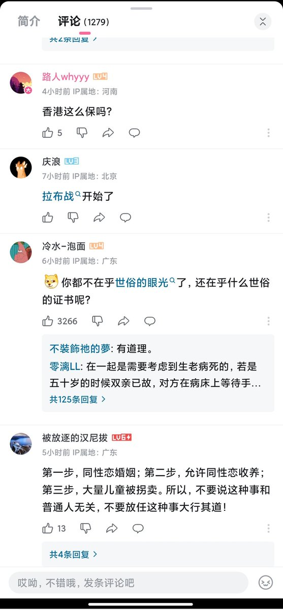
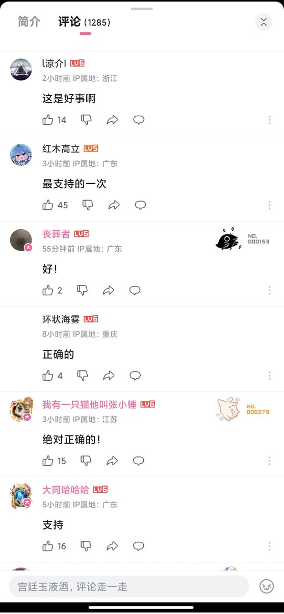
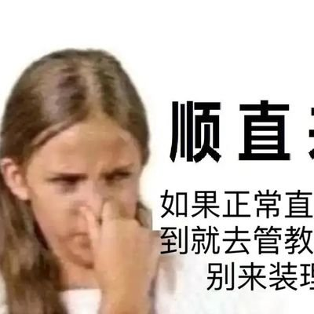

RedFox（2代目）🇲🇴🇭🇰
@FoxRed695449
此次草案的提出原於《岑子杰訴律政司司長案》，2023年10月終審法院以多數票作出判決，宣告政府違反了香港人權法案第14條下的積極義務，即建立同性關係的法律認可的替代框架，並為此類認可提供相應的權利和義務，以確保有效履行上述義務。
在此草案被否決的情況下，同性伴侶唯有逐樣權利去司法覆核，香港作為普通法系地區，未來如果有終審法院提到實質同性伴侶的權利，是現行法律沒有滿足到，基本上香港政府一定會輸。最終耗費的，也只是香港寶貴的司法資源以及香港政府財政。



咸福宫日记
@Alantur57426778
今日俄罗斯能不能滚？
究竟谁能制裁一下这个境外媒体？
同婚不通过：好！
男同被鞭刑：好！
男同被拉去填线：好！
图书馆被“诬告”：媚冻同跑去先男后同一下，呼吁激同for冻冻。
要我说呀，直男被女友卖去缅甸打聋耳朵：好！ https://t.co/emY0VJR61W